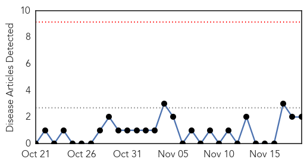
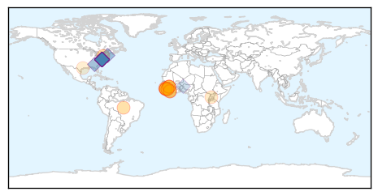

West Nile Virus
30-Day Web Trend
0 alerts, 0 warnings

30-Day Twitter Trend
0 alerts, 0 warnings

Article Locations
Article Confidences

Top Articles:
Top Tweets:
-
No tweets found for Nov 19, 2015
Ebola
30-Day Web Trend
0 alerts, 0 warnings

30-Day Twitter Trend
28 alerts, 2 warnings

Article Locations
Article Confidences

Top Articles:
- 0.999
- Last Known Ebola Case in Guinea Recovers from the Virus
- 0.999
- 2015, Behind the News
- 0.999
- UN Ebola chief says priority now is helping 15,000 survivors
- 0.997
- UN Ebola chief: Priority now is helping 15,000 survivors
- 0.997
- UN Ebola chief says priority now is helping 15 000 survivors
- 0.996
- UN Ebola chief says priority now is helping 15,000 survivors
- 0.996
- UN Ebola chief says priority now is helping 15 000 survivors
- 0.994
- University at heart of Ebola battle badly hit by deaths
- 0.991
- Guinea begins countdown to being Ebola-free
- 0.991
- Soon To Be Declared Ebola Free.
- 0.958
- Building Defences Against Future Ebola Outbreaks
- 0.868
- Chief Medical Officer Expresses MOHS Readiness to improve Status of Emergency Obstetric and Newborn Care in Sierra Leone.
- 0.777
- EU Parliamentary Team told of Ebola effect in Lunsar
- 0.679
- Chief Medical Officer Expresses MOHS Readiness to improve Status of Emergency Obstetric and Newborn Care in Sierra Leone
- 0.663
- Meet the Ugandan Scientist Who Developed the Rapid Ebola Test
- 0.609
- Over 250 midwives honored in Bong
- 0.528
- Texas Children's Hospital isolation unit opens to contain contagious diseases
Top Tweets:
- 0.984
- Ebola outbreak in West Africa 23 months on: Sierra Leone university students' views on the crisis - https://t.co/IM4oKFPi1t ebola
- 0.981
- Matenda a Ebola Akuyembekezeka Kutha Mdziko la GuineaMatenda a Ebola Akuyembekezeka ... - https://t.co/NtM3QeOUap ebola
- 0.977
- Last patient with Ebola recovers in Guinea now with no cases of the disease - https://t.co/yi5bN50eKs ebola
- 0.970
- Potential impact of sexual transmission of Ebola virus on the epidemic in West Africa - https://t.co/kCxyMElRao ebola
- 0.960
- - Ebola outbreak in West Africa “is not completely over” Navarro - https://t.co/6hj6ra6lyG ebola
- 0.949
- Health: Last Ebola Patient Released from Treatment Center - https://t.co/01rZB9Gb6O ebola
- 0.944
- Ebola: Can't say this often enough. The world owes a huge debt to the health professionals & response workers who battled Ebola. myheroes
- 0.934
- Guinea: last known patient of Ebola - https://t.co/W8i8QDIE8J ebola
- 0.931
- Guinea: Last Ebola patient tests negative - https://t.co/TLwlqwHUDf ebola
- 0.930
- Gamma interferon protects mice from Ebola virus - https://t.co/eW1fBUY02L ebola
- 0.928
- News in the Humanosphere: No known cases of Ebola in Africa - https://t.co/p9JwupOIuw ebola
- 0.903
- Ebola Vaccine Shows Positive Human Immune Response - https://t.co/olSFLKptLU ebola
- 0.898
- Ebola outbreak in West Africa has resulted in more Ebola survivors than ever before: https://t.co/tzHuMxl5zj
- 0.885
- Last Known Ebola Patient Cured In Guinea - https://t.co/J2pfZwlV2E ebola
- 0.878
- Speaker to discuss Ebola influenza and future pandemics - https://t.co/7ytn0QturW ebola
- 0.876
- Last known Ebola case in Guinea recovers - https://t.co/ukq4op4lmy ebola
- 0.873
- RT: @chrislhayes do the syrins have the ebola?!?
- 0.868
- ebola anarchist e-juice - https://t.co/yyDrXrPdEE ebola
- 0.866
- Hewlett Foundation Grant Summary | Ebola Epidemic Response - https://t.co/0SNQKmUOOa ebola
- 0.848
- Guinea Begins Countdown To Ebola End - Celebrating Progress Africa https://t.co/eBvDS2vFcL ebola EVD
- 0.847
- Tallaght hospital in lockdown following Ebola scare - https://t.co/2BsF7TEnLs ebola
- 0.834
- Traditional healers change leaf after Ebola - https://t.co/s8h0ssmfKS ebola
- 0.832
- Guinea Begins Countdown To Ebola End - https://t.co/EPrem1Pz8h ebola
- 0.824
- New Ebola Vaccine Safe Stimulates Strong Immune Response - NDTV https://t.co/qOlJtDlMBb ebola EVD
- 0.824
- New Ebola Vaccine Safe Stimulates Strong Immune Response - NDTV https://t.co/SJ7rYbRngg ebola EVD
- 0.810
- Sierra Leone: World Bank Provides US126 Million for Post-Ebola Recovery - https://t.co/SZZXevxj97 ebola
- 0.805
- Studies show Ebola RNA stable in blood promise for filovirus vaccine - CIDRAP https://t.co/NXuIF1CI3T ebola EVD
- 0.804
- New Ebola vaccine safe stimulates strong immune response - Zee News https://t.co/qR8UtS75HX ebola EVD
- 0.795
- New Ebola Vaccine strengthens Immune Response: Study - https://t.co/69tDGvrJsh ebola
- 0.794
- Alleyesonguniea as they countdown to Zero Ebola cases.africaagainstebola
- 0.792
- Prioritising psychosocial support for people affected by Ebola... - https://t.co/KUKG892rba ebola
- 0.791
- French speaker +behavioral scientist +health communicator = perfect candidate for Ebola outbreak response in Guinea https://t.co/4Uqnzx40F6
- 0.786
- New Ebola vaccine safe stimulates strong immune response - https://t.co/Wubn9eYxen ebola
- 0.785
- UN Ebola envoy: Survivors are "priority number one" - https://t.co/93bBkH7z0K ebola
- 0.784
- Studies show Ebola RNA stable in blood promise for filovirus vaccine - https://t.co/1rMEMuT4gH ebola
- 0.753
- Support for Ebola survivors 'priority' says UN envoy - https://t.co/tMolPyjncv ebola
- 0.752
- Going home to face Ebola - https://t.co/2eT3JGhrhB ebola
- 0.740
- Future epidemic trials must cut through red tape says Ebola researcher - https://t.co/04J67qs1yA ebola
- 0.739
- University at heart of Ebola battle badly hit by deaths - University World News https://t.co/oP566LCHvO ebola EVD
- 0.736
- University at heart of Ebola battle badly hit by deaths - https://t.co/pft84j3Vnw ebola
- 0.735
- Ensuring 15000 survivors of Ebola have support they need is first priority: UN envoy - https://t.co/zhhUxxTpkR ebola
- 0.733
- Queen gives lunch for Ebola doctor - https://t.co/zEJ97ipYDy ebola
- 0.728
- Continue Ebola Survivors' Project Unicef Urged - https://t.co/ynyan6Jfs0 ebola
- 0.712
- UN Ebola chief says priority now is helping 15000 survivors - https://t.co/S7dO0vT5W1 ebola
- 0.712
- UN Ebola Chief Says Priority Now Is Helping 15000 Survivors - https://t.co/nXhRBbW3U3 ebola
- 0.667
- It's really looks like the West African Ebola outbreak is over. No new cases in Guinea & no contacts being followed https://t.co/194UYCd92C
- 0.663
- The last known Ebola case in Guinea a three week old girl has... Stock Footage Video - https://t.co/Tlq0P5Y4C3 ebola
- 0.661
- UN Ebola Chief Says Priority Now Is Helping 15000 Survivors - ABC News https://t.co/AH5wzUGzj1 ebola EVD
- 0.656
- University of Maryland's Ebola vaccine declared safe and effective - https://t.co/sRL3dOmxKQ ebola
- 0.632
- What The US Refugee Panic Shares With The Ebola Panic - Forbes https://t.co/r8RT6qM7KJ ebola EVD
Showing top 50 tweets...